操作ガイド 01
最初に：正規版と試作版の違い
公式15.6から日本語UIが追加されています。現在は正規版を使い、このページの試作版ショートカット・移動確認・英語の残存一覧を現行版の手順として使わないでください。試作版は常用を終了しています。15.7.1までの公式変更点と現行ガイドへ。出典：公式リリースノート。
以下は2026年10月12日時点の記録です。MacWhisper 15.5に日本語翻訳を追加した非公式日本語UI試作版v5を撮影したもので、現在の正規日本語版ではありません。「v5」は日本語化の試作番号です。
試作版は主要画面の日本語表示を確認した段階です。録音、文字起こし、外部送信の動作試験は未実施です。動作検証が済むまで、失えない録音や本番の会議は正規版で扱ってください。
| 比較する点 | 正規版 | 非公式試作版v5 |
|---|---|---|
| 提供元・位置付け | 開発元の配布版 | 別コピーに翻訳を追加したローカル署名版 |
| 日本語表示 | この環境では英語表示になる場合があります | 主要操作を日本語化。一部は英語のままです |
| 正規版への変更 | インストール済みの本体は変更していません | アプリのコピーに翻訳リソースを追加。実行コードの直接改造はしていません |
| 設定・履歴 | 同じアプリ識別子を使い、完全分離していません。表示名の変更が正規版にも影響する可能性があります | |
| 検証 | 試作版の表示確認と混同しません | 主要表示・同じv5の再起動を確認。全機能の動作保証はありません |
| 更新後 | 通常の更新対象 | 自動更新後も日本語化が残るとは保証できません |
ローカルの作業記録：2026年10月12日の翻訳作業の引き継ぎ、画面監査、表示名変更の記録を読み取り確認。ここに挙げた試作版固有の説明は公式仕様ではありません。
どこまで確認したか
- 翻訳の自動検査10件とローカル署名の検証は合格した記録があります。
- 主要画面の表示と、同じv5の再起動を確認した記録があります。一部の画面は画像でも文字切れがないことを確認しています。
- 全画面、全選択肢、全警告の確認は未完了です。署名検証の合格は、全機能の安全性や動作の保証ではありません。
この説明書の根拠の読み方
公式ヘルプ は機能の基本説明、公式更新履歴 は15系の追加・変更、実機の表示確認 はv5で見えたラベル・説明を示します。画面のスイッチの状態は撮影時の設定で、推奨値を意味しません。操作の結果を試していない箇所を「動作確認済み」とは扱いません。
英語版画面を使った従来の詳細説明は既存の完全操作ガイドで読めます。そちらには13.21.4・15.4の画像があり、本ページのv5画像とは区別してください。
操作ガイド 02
日本語版を開き、画面の場所を覚える
- 用意済みの「MacWhisper 日本語版 v5」ショートカットから起動します。Dockのアイコンは正規版を指している場合があるため、英語表示なら起動元を確認します。
- ホームの左側に「ホーム」「処理待ち」「文字起こし」「会議」「音声入力」「最近削除した項目」「フォルダ」が表示されます。
- 設定を開くときは、ホーム左下の「設定」を押します。設定内の「設定を検索」で項目を探せます。
- 設定の「このアプリについて」で版番号を確認します。今回の実機は15.5（1550）で「MacWhisperは最新です」と表示されました。
実機の表示確認：2026年10月12日23:03の最新版表示。以後の最新版はアプリの更新確認と公式更新履歴で確認してください。
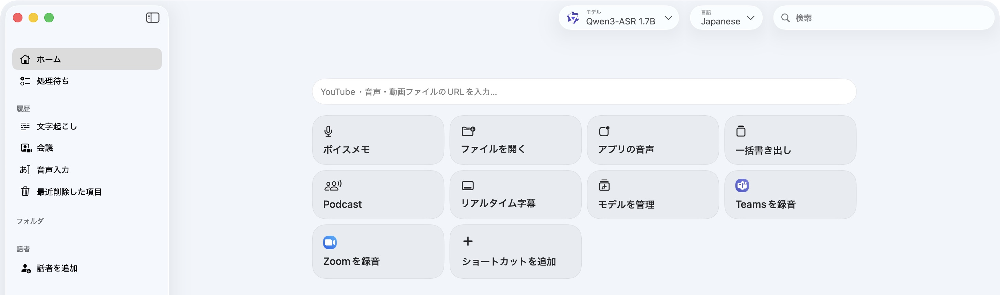
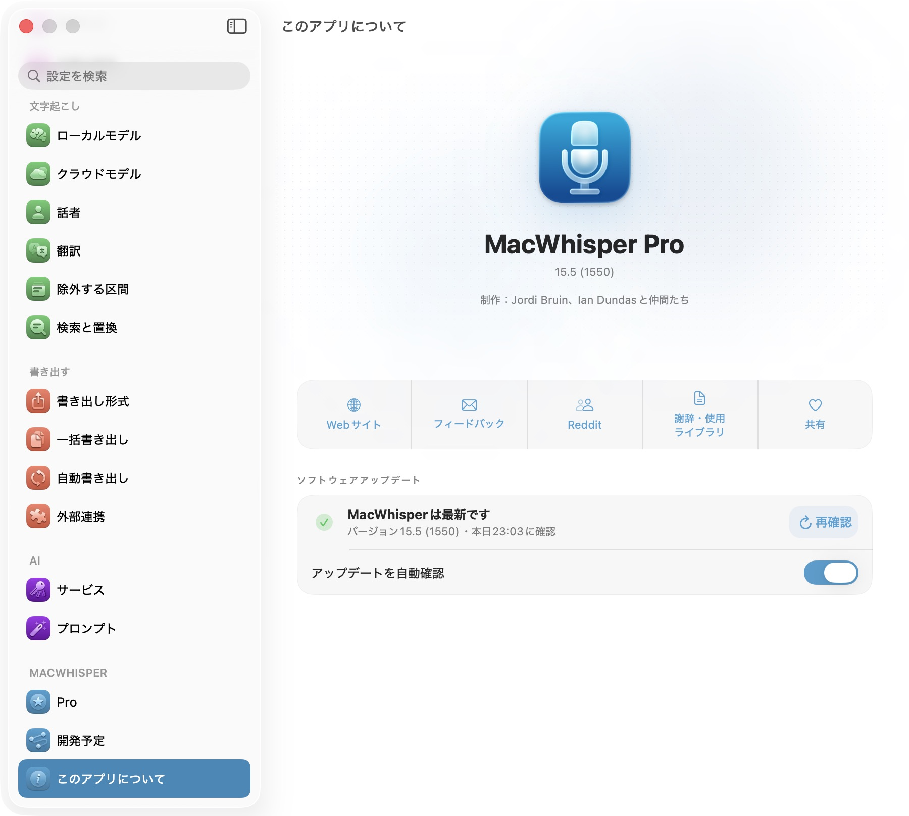
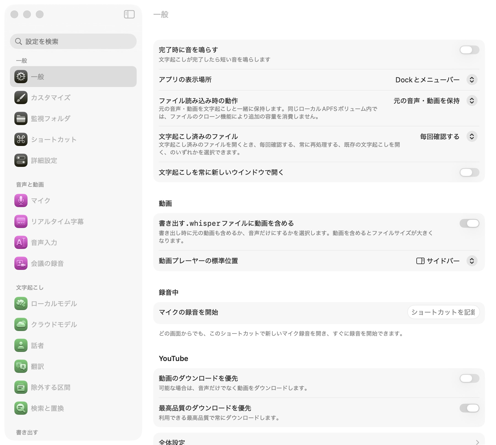
起動時に英語や認証が出たとき
Move to Applications Folder は「アプリケーションフォルダへ移動」、Do Not Move は「移動しない」です。別コピーをそのまま使う今回の試作では、正規版を置き換えないよう「Do Not Move」を選んで起動した記録があります。移動先に正規版がある状態で安易に置き換えないでください。
最初にキーチェーン確認が2〜3回表示され、本人が許可したとの記録があります。その後の再起動で取得した画面には認証がありませんでしたが、今後出ないとは保証できません。キーチェーン確認を解除・無効化したわけではありません。
過去の試作では画面停止が発生し、診断記録でキーチェーン読み出し待ちを確認しています。停止した場合は、その画面と直前の操作を記録して原因を調べます。
公式更新履歴：最新版のリリースノート
操作ガイド 03
音声ファイルを文字起こしする
基本の流れは「モデルを選ぶ」「言語を選ぶ」「ファイルを開く」「結果を確認する」です。以下は公式の操作説明とv5の表示を対応させた手順であり、試作版での文字起こし完了テストはしていません。
- ホーム上部の「モデル」を開き、使うモデルを選びます。APIを使わずMacで処理したい場合は、ローカルモデルを選びます。
- 上部の「言語」で音声の言語を選びます。日本語の表示が Japanese のまま残る場合があります。
- 「ファイルを開く」を押して音声・動画ファイルを選びます。複数ファイルを開くときは、まとめて選択するかアプリへドラッグします。
- 処理状況は「処理待ち」、保存された結果は「文字起こし」で確認します。完成後は音声と照合し、名前や数字、話者の取り違えを直してから書き出します。
どの入り口を使うか
| ホームの表示 | 用途 | 試作版での確認範囲 |
|---|---|---|
| ファイルを開く | 保存済み音声・動画を読み込む | 入口の表示確認 |
| YouTube・音声・動画ファイルのURLを入力… | 対応URLから取り込む | 入力欄の表示確認。ダウンロード未試験 |
| ボイスメモ | マイクから録音する | 入口の表示確認。録音未試験 |
| アプリの音声 | 他のアプリの音を録音する | 入口の表示確認。録音未試験 |
| Podcast | 話者ごとの別トラックを扱う | 入口の表示確認。処理未試験 |
| リアルタイム字幕 | 音声をその場で字幕表示する | 入口の表示確認。処理未試験 |
公式ヘルプ：複数ファイルの読み込み・一括文字起こし
公式ヘルプ：Podcastと通常の話者識別の違い
URL取り込みの詳しい説明は従来ガイドのホーム画面と公式ヘルプを参照してください。ホームの「一括書き出し」と、複数ファイルを開いて行う一括文字起こしは区別します。
操作ガイド 04
ローカルモデルと話者を選ぶ
- ホームの「モデルを管理」、または設定の「ローカルモデル」を開きます。
- 未取得なら「ダウンロード」、取得済みなら「使用する」を押します。チェック印が現在の選択です。
- 話した人を分けたい場合は、モデル名の下に「話者識別」があるか確認します。
- 設定の「話者」で「話者識別を有効にする」を確認します。話者識別用モデルは「詳細設定」の「文字起こしの詳細設定」にあります。
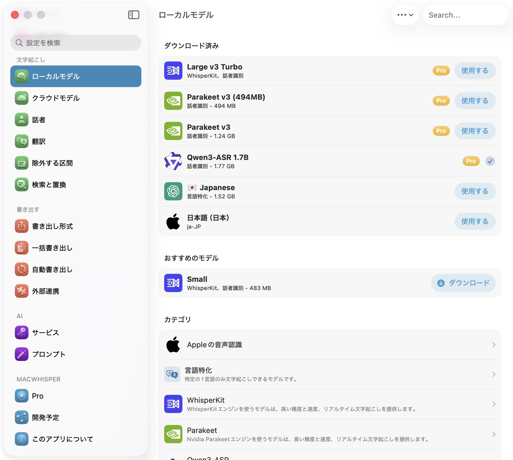
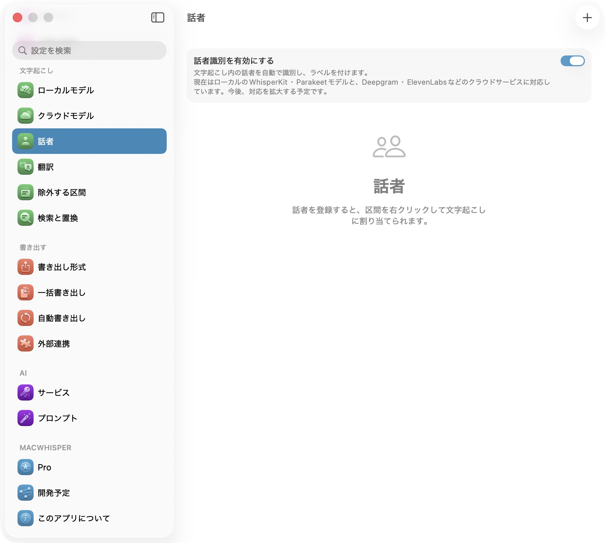
実機の表示確認：このMacではQwen3-ASR 1.7Bが選択され、「話者識別」と表示されました。Large v3 Turboにも同じ表示があります。「Japanese」の言語特化モデルにはこの表示がありません。この一覧は撮影したMacの状態で、全機種共通の一覧ではありません。
公式ヘルプは、完成後の話者名変更や、同じ人が別話者になったときの統合を説明しています。ただし記事は旧版で、対応モデルの説明が15.5と異なります。15系のNemotron・Pyannote選択、Nemotronの最大8話者は公式更新履歴と実機表示を根拠にします。
話者名は完成した文字起こしのサイドバーから変更できます。同じ人が別々に分かれた場合は話者名を右クリックして統合する、というのが公式の手順です。v5の編集画面での統合・修正結果は未試験です。
公式ヘルプ：話者名の変更・話者の統合
公式更新履歴：15.2・15.3の話者識別変更
操作ガイド 05
テキスト・字幕を書き出す
普通の文章として読むなら「文字起こし .txt」、字幕の時刻を残すなら「字幕 .srt」を選びます。SRTは「開始時刻・終了時刻・文章」を組にして保存する字幕形式です。
- 完成した文字起こしを開き、ファイルメニューの「書き出す」から必要な種類を選びます。v5では「文字起こし」「字幕」の表示を確認した記録があります。
- 標準の形式を確認・編集するときは、設定の「書き出し形式」を開きます。各行の下向きボタンで設定を展開できます。
- 複数の完成結果をまとめて出すときは「一括書き出し」を使います。その標準の形式は、設定の同名ページで選択します。
- 完成のたびに出力したい場合は、設定の「自動書き出し」で形式と保存先フォルダを確認します。監視フォルダの書き出し設定は別の場所にもあるため、目的に合う設定を確認します。
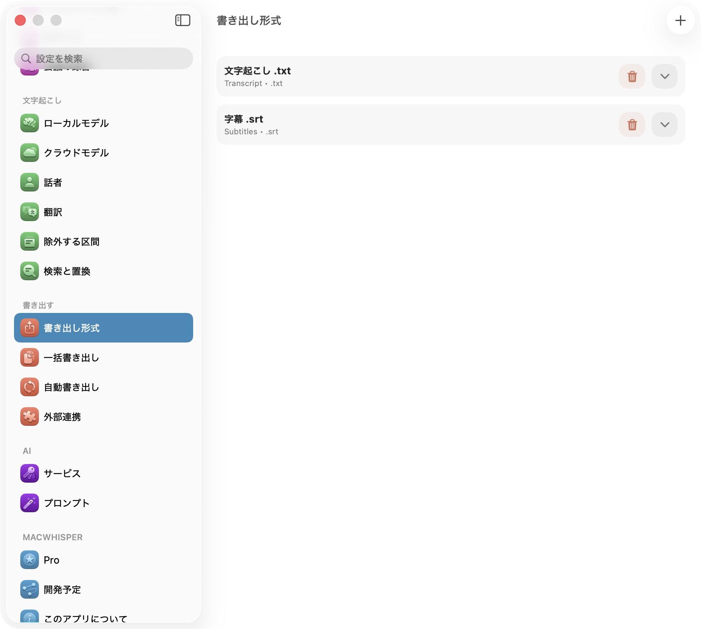
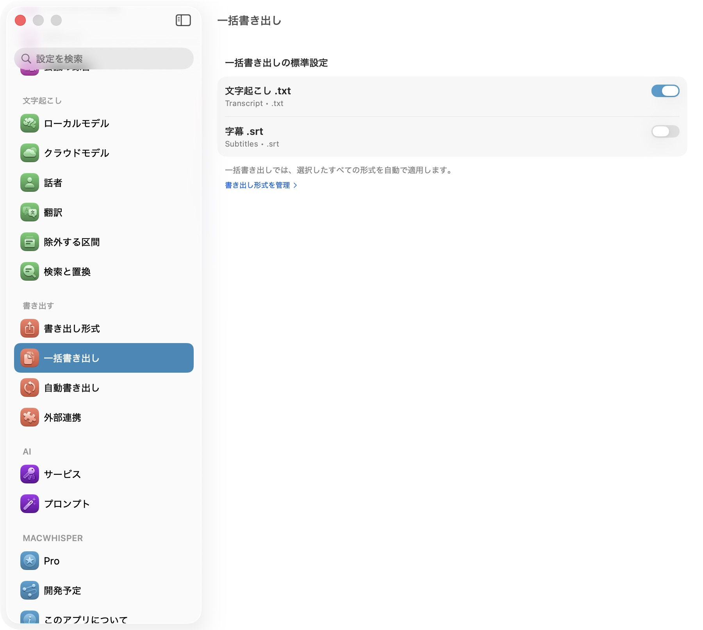
実機の表示確認：形式一覧、一括書き出し、自動書き出しの設定を確認。自動書き出しには「録音音声」「AI要約」「書き出し先」もあります。保存先を含む画面は、私的なパスを公開しないため掲載していません。実際の書き出しは未試験です。
公式ヘルプ：一括処理で複数の書き出し形式を指定する
公式ヘルプ：監視フォルダの書き出し設定
操作ガイド 06
監視フォルダで自動処理する
録音ファイルを指定フォルダに入れたとき、自動で文字起こしするPro機能です。フォルダを指定するだけで、そこにあるファイルが処理対象になり得るため、最初は短い検証用ファイルで確認します。
- 設定の「監視フォルダ」を開き、「別のフォルダを追加」から対象を選びます。初回の追加ボタンは公式ヘルプではAdd Watch Folderと呼ばれています。
- 「監視フォルダを自動で文字起こし」を確認します。
- サブフォルダも対象にする場合は「フォルダの階層数」を確認します。「履歴に保存」は自動処理した結果を履歴に残す項目です。
- 「書き出し形式を追加」で出力形式を指定します。ここには Transcript (txt)、Subtitles (srt) の英語が残る場合があります。
実機の表示確認：上記の日本語項目をv5で確認。監視先の私的なフォルダ名を含むため画像は掲載しません。監視対象・設定は変更せず、ファイル投入の動作試験もしていません。
公式ヘルプでは、自動処理をオフにすると新規ファイルを通知し、アプリで処理を開始する流れを説明しています。15.3の更新履歴には、コピー完了待ちや新規サブフォルダへの対応改善があります。
公式ヘルプ：監視フォルダの設定と自動書き出し
公式更新履歴：15.3の監視フォルダ改善
操作ガイド 07
会議の録音・音声入力を設定する
会議のリアルタイム文字起こし
設定の「会議の録音」にある「会議をリアルタイムで文字起こし」は、録音しながら話者付きの文章を小さなウインドウへ表示する項目です。画面の説明ではParakeet・WhisperKit・Qwen3-ASRなど対応モデルが必要です。
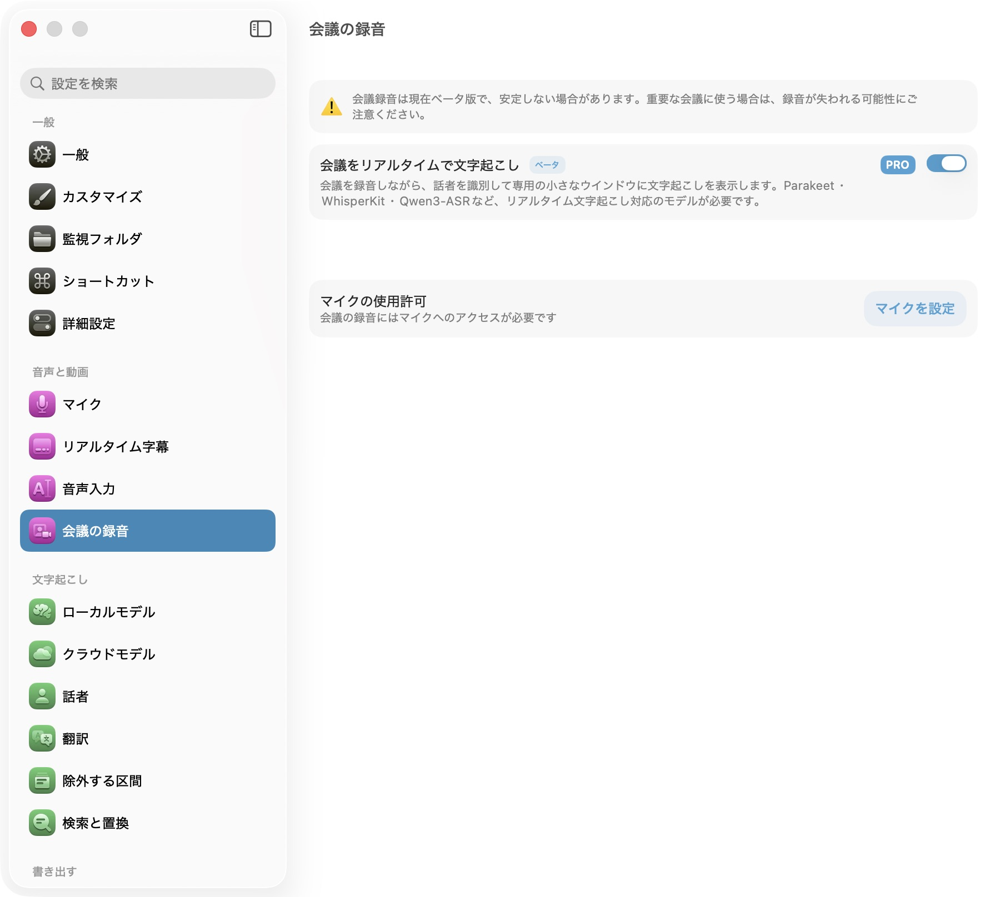
公式の基本手順は、会議検出を設定し、検出通知から録音を開始して、終了後の録音を文字起こしする流れです。15系ではライブ表示が加わり、15.4では設定場所が「会議の録音」へ移りました。macOS 26以降の録音権限の変更もあるため、旧ヘルプの画面収録権限の説明だけで判断せず、使用環境の案内を確認します。
実機の表示確認：今回の試作版は「マイクの使用許可」の案内を表示しています。権限を追加していないため、その先の設定・録音・ライブ表示の動作は未確認です。会議録音は画面上でもベータ版の注意書きがあります。
公式ヘルプ：会議検出・録音の基本手順
公式更新履歴：15系のライブ会議・権限・設定場所の変更
音声入力
音声入力は、話した内容を他のアプリの文字入力欄へ入れる機能です。設定の「音声入力」から始めます。今回の画面は「マイクの使用許可」と「アクセシビリティの許可」の案内までを確認しました。許可後のショートカット設定や貼り付けの動作は未確認です。
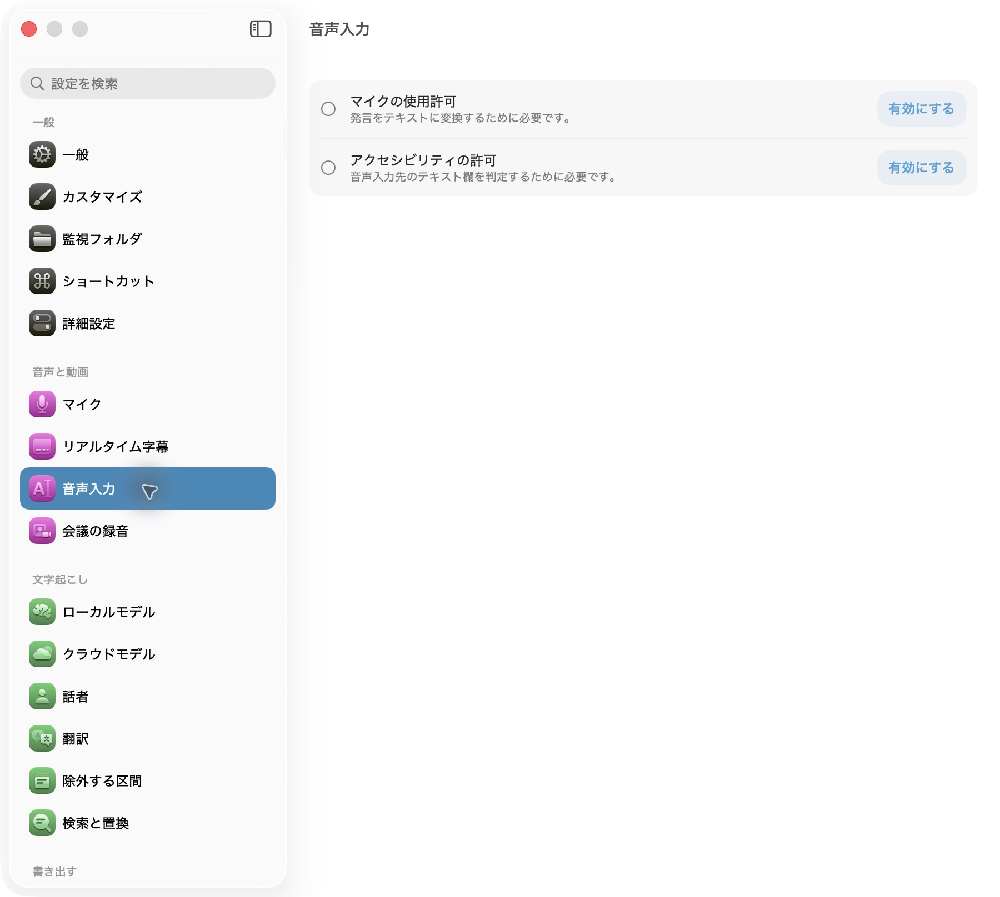
公式ヘルプ：音声入力の基本的な使い方
操作ガイド 08
詳細設定：表示・精度・メモリを調整する
設定の「詳細設定」には、「文字起こしの詳細設定」、「音声入力の設定」、「録音の詳細設定」、「保存領域とデータ」があります。まず変更したい目的に対応するページを開きます。
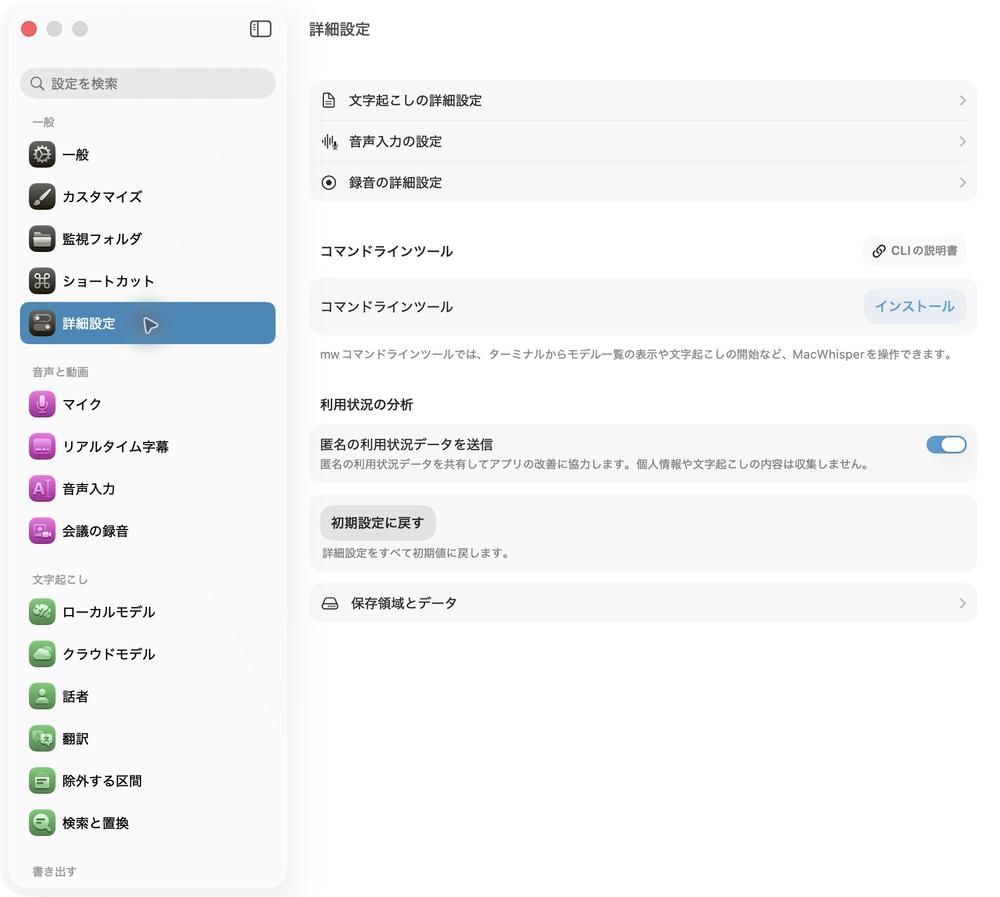
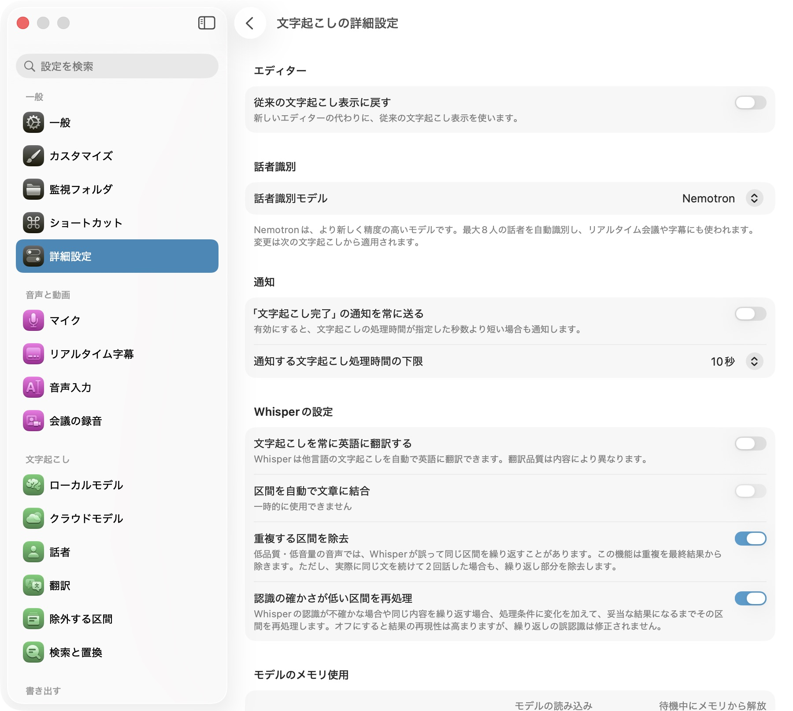
| 日本語の項目 | 意味・使う場面 |
|---|---|
| 従来の文字起こし表示に戻す | 新しいエディターから従来の表示へ切り替える設定です |
| 話者識別モデル | 話した人を分けるためのモデル。撮影時はNemotronでした。画面では最大8話者で、変更は次の文字起こしからと説明しています |
| 認識の確かさが低い区間を再処理 | 不確かな認識や繰り返しがある区間を、処理条件を変えて再処理する設定です。音声を聞かずに正解を保証する機能ではありません |
| 重複する区間を除去 | 誤認識による繰り返しを減らしますが、本当に2回話した文章も除かれる可能性があると画面で説明しています |
| モデルの読み込み | 文字起こし用AIの準備をいつ行うかを指定します |
| 待機中にメモリから解放 | 使っていないモデルを作業用メモリから外すまでの時間。録音ファイルやダウンロード済みモデルを削除する意味ではありません |
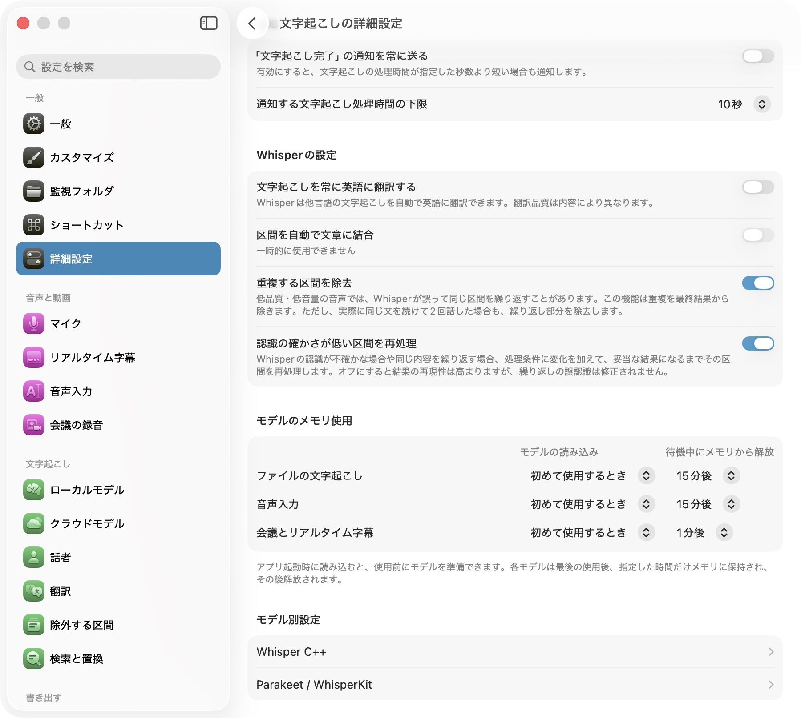
実機の表示確認：上記はv5の設定ラベルと画面内の説明を整理したものです。設定値を変更せず撮影しており、精度や処理時間への効果は試験していません。
公式更新履歴：15.1以降の詳細設定・15.2のメモリ設定
操作ガイド 09
VADと文脈設定を理解する
VADは「声がある部分と無音を見分ける処理」です。長い録音の無音を処理しないようにする設定ですが、エンジンごとに場所と扱いが違います。
Whisper C++
「文字起こしの詳細設定」下部の「Whisper C++」を開きます。
- 「音声区間の検出（VAD）を使う」は、発話を検出して無音を処理対象から除く設定です。
- 「直前の文章を文脈として使う」は、前の認識結果を次の区間へ渡し、名前や表記の統一に役立てる設定です。音質が悪いと誤りを引き継ぐ可能性があると画面で説明しています。
- 「Whisperへのプロンプト」は名前・専門用語・表記のヒント欄です。要約用AIプロンプトとは別です。
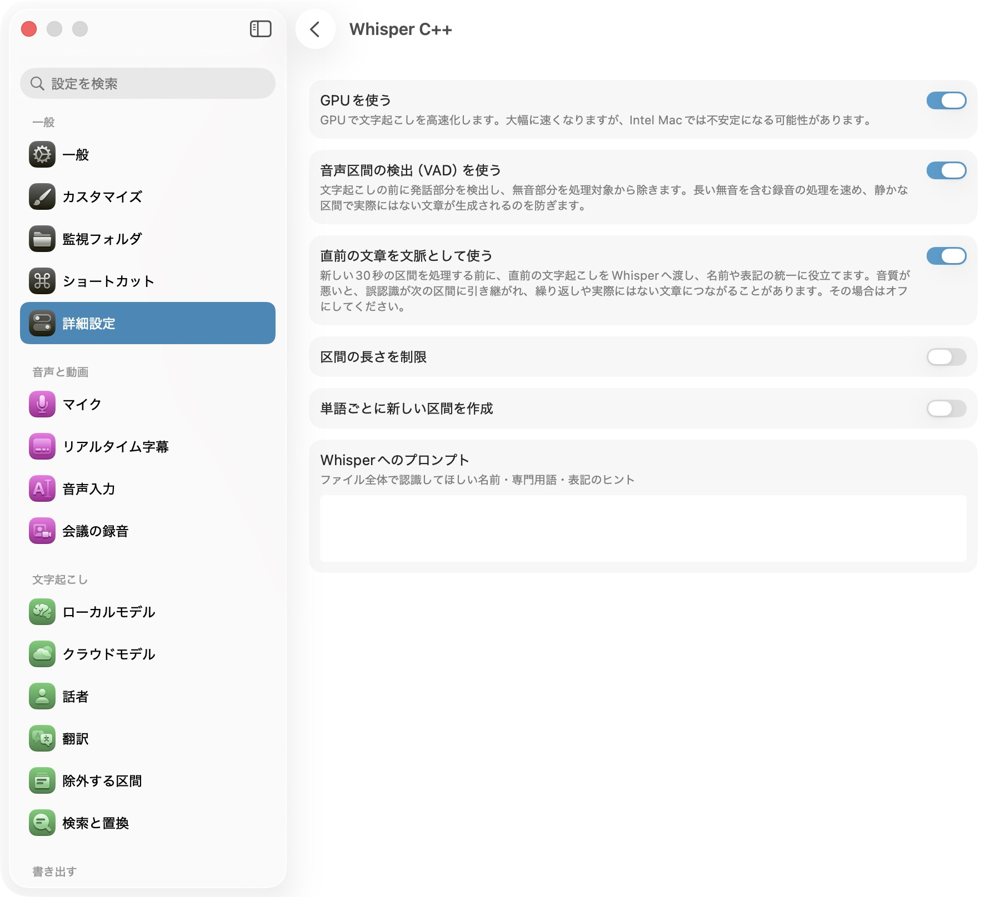
Parakeet / WhisperKit
「文字起こしの詳細設定」下部の「Parakeet / WhisperKit」を開きます。「WhisperKitの音声区間検出（VAD）を有効にする」はWhisperKit専用です。画面には、Parakeetは常にVADを使うことと、処理中の区間順序が一時的に乱れても完了時に整うという注意書きがあります。
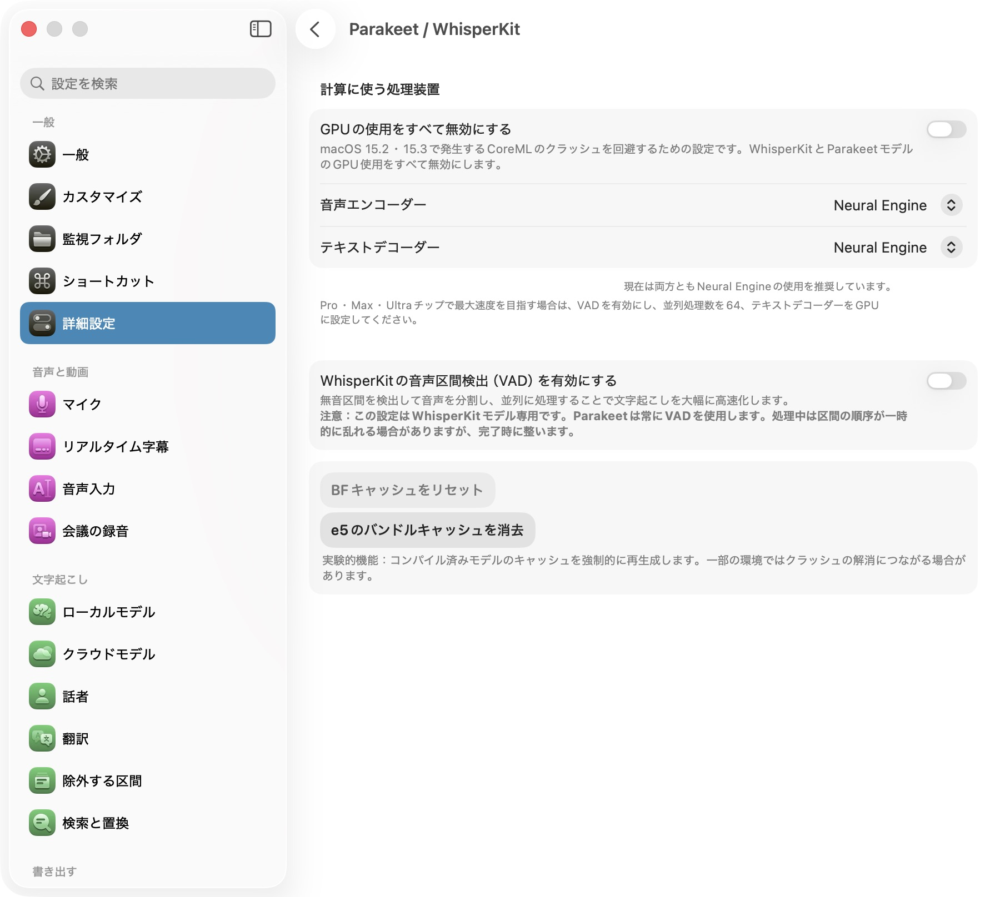
実機の表示確認：この節は設定画面の説明に基づきます。今回、オン・オフによる速度・精度の比較はしていません。GPU・並列処理数などの上級設定も、画像の値をそのまま推奨値としないでください。
公式更新履歴：15.1のWhisper C++ VAD・文脈設定
操作ガイド 10
誤認識を検索・置換し、不要な区間を除く
検索と置換
- 設定の「検索と置換」を開き、右上の「＋」から置換項目を追加します。
- 認識されやすい誤表記と、置き換えたい正しい表記を登録します。例：「マックウィスパー」を「MacWhisper」にそろえる、といった用途です。
- 「大文字・小文字を区別」、「独立した単語のみ置換」の条件を確認します。部分一致の置換は意図しない語まで変えることがあるので、短い語の指定に注意します。
公式ヘルプでは、この全体置換は新しい文字起こしに適用され、過去の文章を一括で直す機能ではないと説明しています。
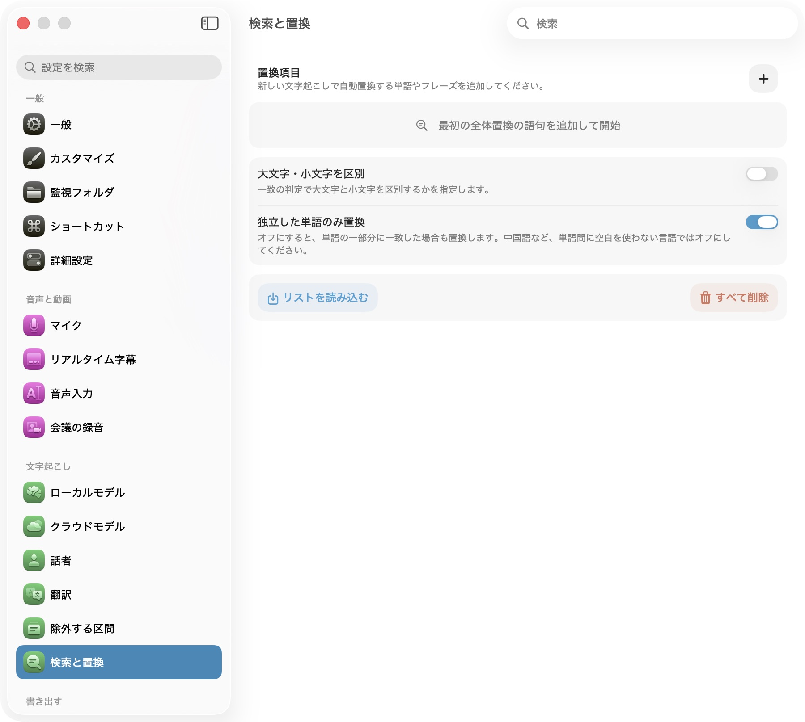
公式ヘルプ：全体置換の追加・一致条件・適用範囲
除外する区間
設定の「除外する区間」には「不要な区間を除外」、「文字起こしを自動整形」、「除外区間をまとめて追加」があります。画面の説明では、登録した語句に完全一致する区間を取り除きます。単語の誤表記を直す「検索と置換」とは使い分けます。
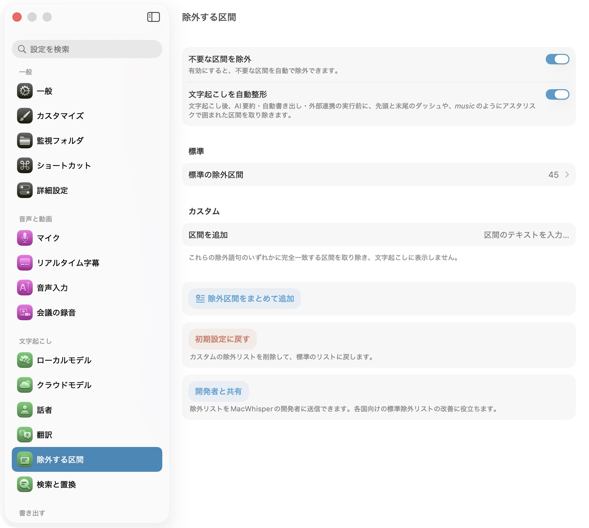
「除外区間をまとめて追加」は、語句を1行ずつ貼り付けて追加するための操作です。「初期設定に戻す」はカスタムのリストを消す操作です。今回どちらも実行していません。
実機の表示確認：項目と説明を確認しただけで、新規ルールの追加や適用結果の検証は未実施です。
公式更新履歴：15.4の除外区間一括追加
操作ガイド 11
AIサービス・日本語プロンプト・翻訳
音声を文章にする文字起こしモデルと、完成した文章を要約・言い換えするAIサービスは別の設定です。日本語化は表示の変更で、AI契約や利用権が追加されるわけではありません。
AIサービスを確認する
- 設定のAI欄にある「サービス」を開きます。
- 「登録済みサービス」を確認します。追加する場合は「サービスを追加」か、使いたいサービスのボタンを選びます。
- オンラインサービスは、その提供元のAPIキーや対応モデルが必要です。キーを入れる前に利用条件と料金を確認します。
- 完成した文字起こしのAI機能で、利用するサービスとプロンプトを選びます。選択だけでなく、どの接続先へ文章を送るかを確認します。
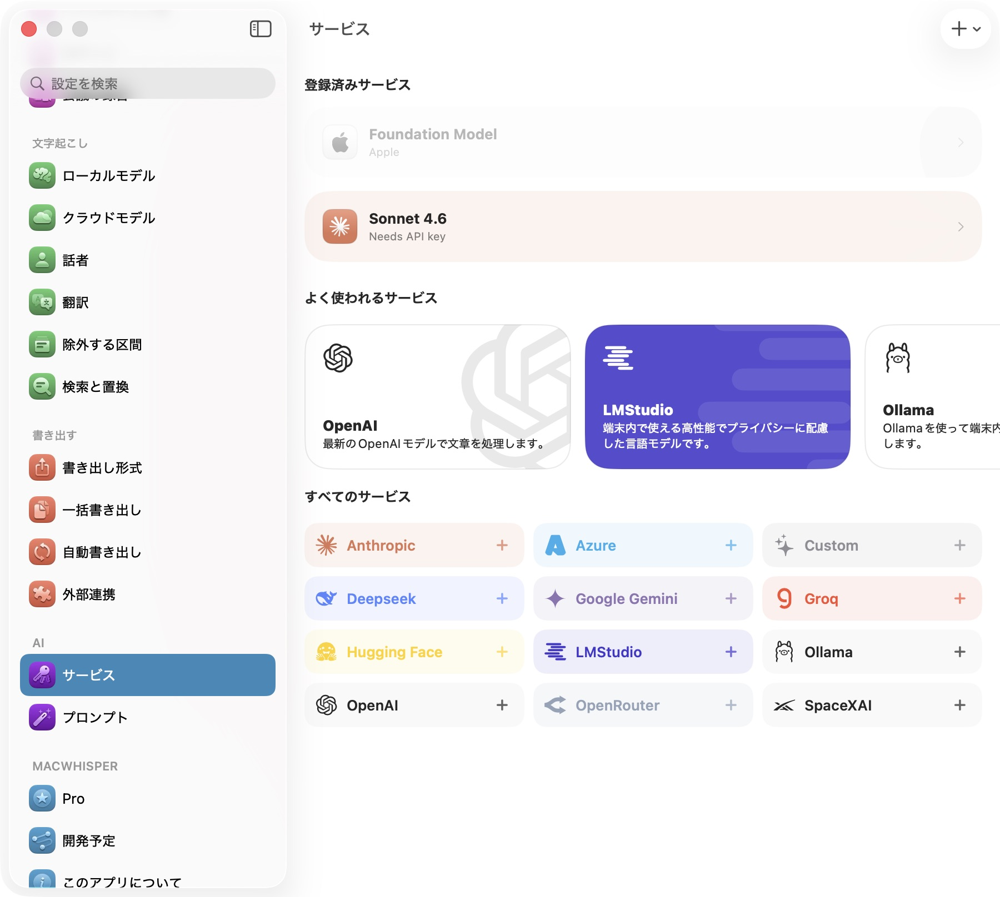
Needs API key は「APIキーが必要」、Foundation Model はAppleの端末内AIモデルの表示です。Apple、Ollama、LMStudioの利用可否はMacや別途の設定に依存します。今回の画面には無効な項目もあり、接続成功を意味しません。
公式ヘルプでは、一般向けのChatGPT・Claude・Gemini契約にAPI利用やクレジットが必ず含まれるわけではなく、外部サービスの料金はMacWhisperの購入と別と説明しています。外部AIを実行すると文字起こしと指示文が接続先へ送られます。今回、追加・接続テスト・送信はしていません。
公式ヘルプ：AIサービスの設定・契約・送信先の説明
プロンプトの日本語名
設定の「プロンプト」で確認できます。以下の10件は、この環境で保存済みタイトルだけを変更しました。指示本文は変更していません。同じv5の再起動後も保持された記録があります。
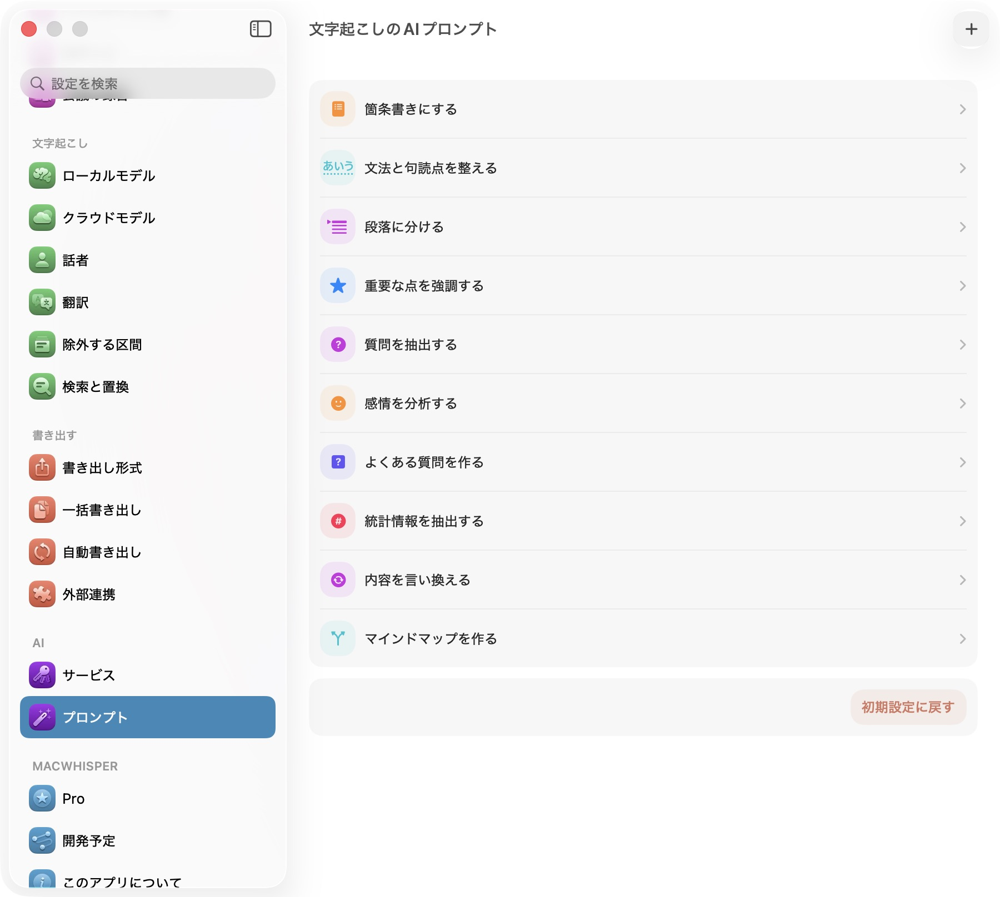
| 元の英語名 | この環境の日本語名 |
|---|---|
| Bullet Points | 箇条書きにする |
| Improve Grammar & Punctuation | 文法と句読点を整える |
| Split into paragraphs | 段落に分ける |
| Highlight Key Points | 重要な点を強調する |
| Extract Questions | 質問を抽出する |
| Identify Emotions | 感情を分析する |
| Generate FAQ | よくある質問を作る |
| Extract Statistics | 統計情報を抽出する |
| Paraphrase Content | 内容を言い換える |
| Create a mindmap | マインドマップを作る |
この日本語名は翻訳リソースだけで変わったものではなく、アプリの編集画面で保存した名前です。正規版にも影響する可能性があります。元に戻す場合はタイトルだけを元の英語名へ戻します。「初期設定に戻す」は指示や独自設定まで戻る可能性があるため、表示名の復元には使いません。
翻訳設定
設定の「翻訳」には「原文と翻訳を並べて表示」、「動画プレーヤーには翻訳字幕のみ表示」があります。Transcript And Segments は「全文と区間の両方」、最近使った言語の Japanese は「日本語」です。
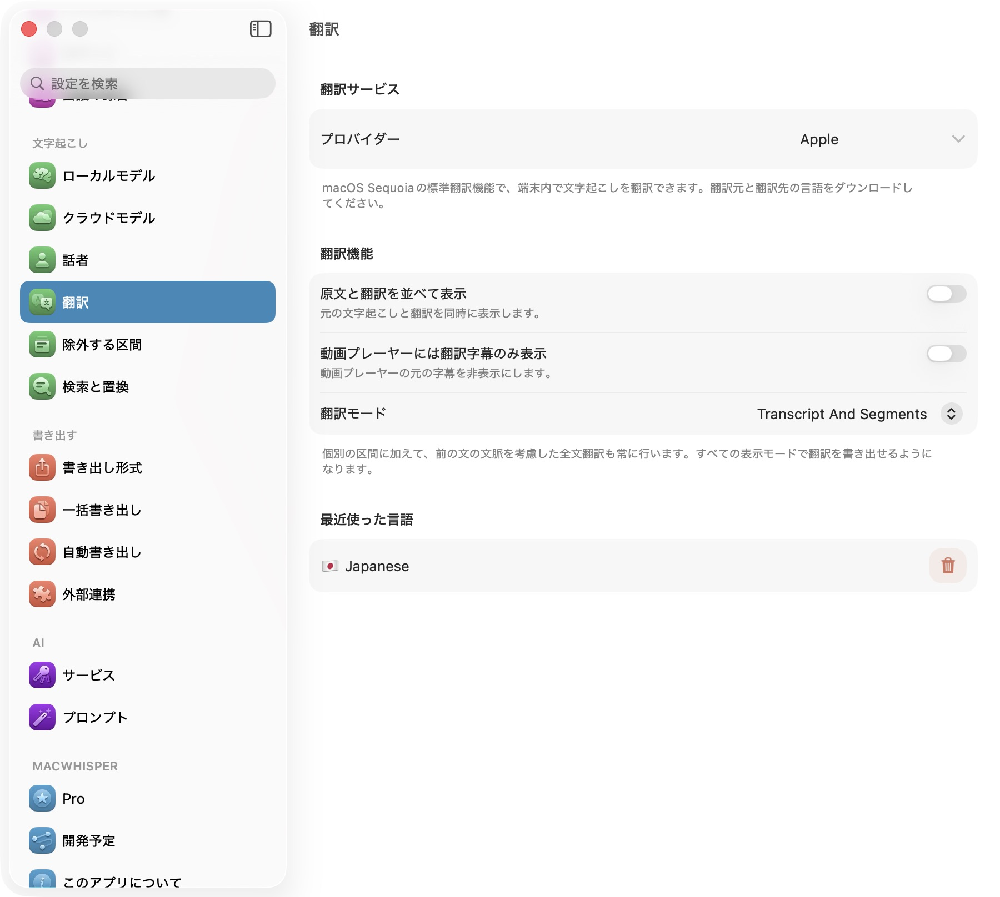
実機の表示確認：翻訳画面の説明ではAppleの標準翻訳機能を使う場合、翻訳元・翻訳先の言語のダウンロードが必要です。翻訳の実行・品質検証はしていません。
操作ガイド 12
英語が残る場所の早見表
以下は今回の通常の翻訳追加で日本語に変わらなかった表示です。原因は項目ごとに未確定です。固定文字列・保存済みデータ・外部配信などが考えられますが、「すべて固定英語」「すべて外部配信」とは断定しません。正式な解消は開発元へローカライズ対応を依頼する方針です。
| 場所・英語表示 | 日本語の意味 |
|---|---|
| Move to Applications Folder / Do Not Move | アプリケーションフォルダへ移動／移動しない |
| 開発予定のカード本文・Developing / Investigating | カード本文は英語のまま。状態は「開発中」／「調査中」 |
| モデル検索欄のSearch... | 検索… |
| Qwen3-ASRの一部説明 | 速度より精度を重視するモデルで、Parakeetより大きく遅い、という画面内説明 |
| Transcript And Segments | 全文と区間の両方 |
| 最近使った言語のJapanese | 日本語。モデル名としてのJapaneseは名称として区別します |
| Transcript / Subtitles | 文字起こし／字幕。形式の副題や一括・自動書き出し等で残ります |
| Foundation Model / Needs API key | Appleの端末内AIモデル／APIキーが必要 |
| None・一部の入力欄の案内 | なし。入力欄の補助説明も一部は英語のままです |
| 書き出しメニューのSegments | 区間ごとの書き出し |
WhisperKit、Nemotron、Neural Engineなどの製品・技術名、拡張子、URLは原表記を使います。利用者の文字起こし本文そのものを、日本語化対象の画面ラベルとは数えません。
外部連携の用語
設定の「外部連携」では「IPアドレス」「ポート番号」「APIトークン」「親ページのURL」などの日本語表示を確認した作業記録があります。IPアドレスは接続先、ポート番号は接続口、APIトークンは接続を許す秘密の文字列です。実際の値を含む画像は掲載せず、接続テストや送信の成功も確認していません。
作業記録と実機の表示確認：監査記録で残存英語を照合。モデル検索、翻訳、書き出し形式、AIサービスの英語は今回の撮影画面でも確認しています。全メニューの再確認を終えたという意味ではありません。
操作ガイド 13
日本語化の範囲・困ったとき・参照先
翻訳の項目数
英語の翻訳テーブル由来2,398項目と、他言語テーブル・実画面などからの追加392項目を合わせて、統合翻訳データは2,790項目です。別に複数形2テーブル、アプリ情報・権限説明など19項目があります。製品名や内部識別子など原表記を保持した項目も含み、項目数は全画面の日本語化完了を意味しません。
よくある困りごと
日本語版を開いたつもりなのに英語になる
正規版や過去の試作を開いている可能性があります。用意済みの「MacWhisper 日本語版 v5」から起動し直す前に、現在のアプリで録音・処理が動いていないか確認してください。同じ識別子のため設定と履歴は完全には分離されていません。
日本語名が正規版にも出る
標準プロンプト10件と書き出し形式2件は、共有され得る保存済みデータの名前を変更しています。プロンプトはタイトルだけ英語名へ戻せます。書き出し形式は名前欄だけを空にすると標準の案内名へ戻る、という復元方法を記録しています。本文や形式は変えません。
キーチェーン確認や画面停止が出る
試作版の再署名や起動元の違いで確認が出る可能性があります。認証が今後出ないとは保証できません。過去にはキーチェーン読み出し待ちを診断しています。表示内容と直前の操作を記録し、認証保護を無効化する対応は行わないでください。重要な作業は正規版を使用します。
更新後に日本語が消えた
更新後も日本語化が維持される保証はありません。本体の版番号と実際の表示を確認してください。このガイドの撮影対象は15.5を元にしたv5です。
15.5で音声を読み込めない・結果が空になる
公式更新履歴には音声読み込みの改善と、Plaud等の拡張子と内容が異なる音声への修正があります。v5での処理成功を確認したわけではありません。正規版の最新版で確認し、ファイルが再生できるかと表示されるエラーを記録してください。
配布について
このページは操作説明です。アプリ本体や翻訳ZIPのダウンロードは提供しません。権利・開発元の条件を確認する前の公開配布は行いません。翻訳のみの提出用ZIPは7ファイルで、アプリ本体・録音・文字起こし・認証情報・ユーザー設定を含まない検査記録があり、開発元へはまだ送信していません。
参照先
- 指定の英語版公式ヘルプ（現在はdocs.macwhisper.comへ転送されます）
- 公式リリースノート：15.5の最新変更、旧ヘルプとの差分
- 従来の完全操作ガイド：英語版画面を基準にした詳細。旧版画像を含みます
仕様は公式ヘルプを優先し、旧版の説明と15.5に差がある部分は公式更新履歴と実機表示を分けて記載しました。本ページでは第三者の外部解説は根拠に使用していません。試作版固有の説明はローカルの作業記録と実機確認に基づきます。個人のローカル保存場所は掲載していません。